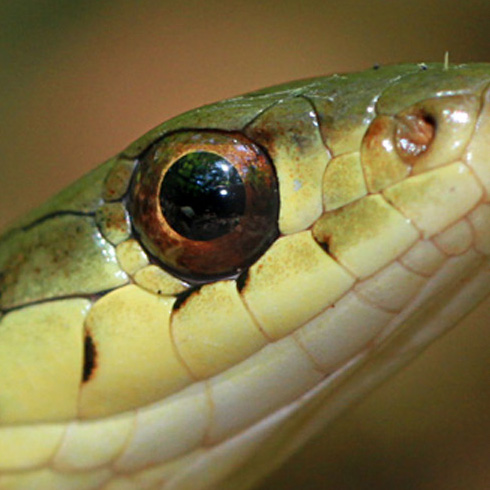

- Able to tell a lizard from a snake by looking at its eyes
- Most lizards have eyelids that can be opened and closed
- Snakes do not have eyelids
- Exceptions - some lizards have a transparent scale that covers the eyes and others do not have eyelids at all

Eye of a lizard

Eye of a snake